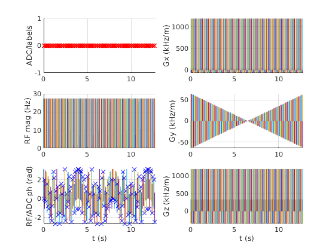

Read a sequence into MATLAB
The Sequence class provides an implementation of the open file format for MR sequences described here: http://pulseq.github.io/specification.pdf
This example demonstrates parsing an MRI sequence stored in this format, accessing sequence parameters and visualising the sequence.
Contents
Read a sequence file
A sequence can be loaded from the open MR file format using the read method.
seq=mr.Sequence();
seq.read('../examples/gre.seq');
Access sequence parameters and blocks
Parameters defined with in the [DEFINITIONS] section of the sequence file are accessed with the getDefinition method. These are user-specified definitions and do not effect the execution of the sequence.
scanId=seq.getDefinition('Scan_ID')
scanId =
2
Sequence blocks are accessed with the getBlock method. As shown in the output the first block is a selective excitation block and contains an RF pulse and gradient and on the z-channel.
b1 = seq.getBlock(1)
b1 =
rf: [1x1 struct]
gx: []
gy: []
gz: [1x1 struct]
adc: []
delay: []
Further information about each event can be obtained by accessing the appropriate fields of the block struct. In particular, the complex RF signal is stored in the field signal.
rf=b1.rf figure; subplot(211); plot(rf.t,abs(rf.signal)); ylabel('RF magnitude'); subplot(212); plot(1e3*rf.t,angle(rf.signal)) ylabel('RF phase'); xlabel('t (ms)');
rf =
type: 'rf'
signal: [4000x1 double]
t: [4000x1 double]
freqOffset: 0
phaseOffset: 0

The next three blocks contain: three gradient events; a delay; and readout gradient with ADC event, each with corresponding fields defining the details of the events.
b2 = seq.getBlock(2); b3 = seq.getBlock(3); b4 = seq.getBlock(4); b2.gx b3.delay b4.adc
ans =
type: 'trap'
channel: 1
amplitude: -2.6798e+04
riseTime: 1.0000e-05
flatTime: 0.0030
fallTime: 1.0000e-05
area: -80.1250
flatArea: -79.8570
ans =
type: 'delay'
delay: 0.0018
ans =
numSamples: 32
dwell: 2.0000e-04
delay: 1.0000e-05
freqOffset: 0
phaseOffset: 0
type: 'adc'
Plot the sequence
Visualise the sequence using the plot method of the class. This creates a new figure and shows ADC, RF and gradient events. The axes are linked so zooming is consistent. In this example, a simple gradient echo sequence for MRI is displayed.
seq.plot()
The details of individual pulses are not well-represented when the entire sequence is visualised. Interactive zooming is helpful here. Alternatively, a time range can be specified. An additional parameter also allows the display units to be changed for easy reading. Further, the handle of the created figure can be returned if required.
fig=seq.plot('TimeRange',[0 16e-3],'timeDisp','ms')
fig =
Figure (3) with properties:
Number: 3
Name: ''
Color: [0.9400 0.9400 0.9400]
Position: [680 678 560 420]
Units: 'pixels'
Use GET to show all properties

Modifying sequence blocks
In addition to loading a sequence and accessing sequence blocks, blocks can be modified. In this example, a Hamming window is applied to the first RF pulse of the sequence and the flip angle is changed to 45 degrees. The remaining RF pulses are unchanged.
rf2=rf; duration=rf2.t(end); t=rf2.t-duration/2; % Centre time about 0 alpha=0.5; BW=4/duration; % time bandwidth product = 4 window = (1.0-alpha+alpha*cos(2*pi*t/duration)); % Hamming window signal = window.*sinc(BW*t); % Normalise area to achieve 2*pi rotation signal=signal./(mr.Sequence.RfRasterTime*sum(real(signal))); % Scale to 45 degree flip angle rf2.signal=signal.*45/360; b1.rf=rf2; seq.setBlock(1,b1);
The amplitude of the first rf pulse is reduced due to the reduced flip-angle. Notice the reduction is not exactly a factor of two due to the windowing function.
amp1_in_Hz = max(abs(seq.getBlock(1).rf.signal)) amp2_in_Hz = max(abs(seq.getBlock(6).rf.signal))
amp1_in_Hz = 123.4103 amp2_in_Hz = 276.9090